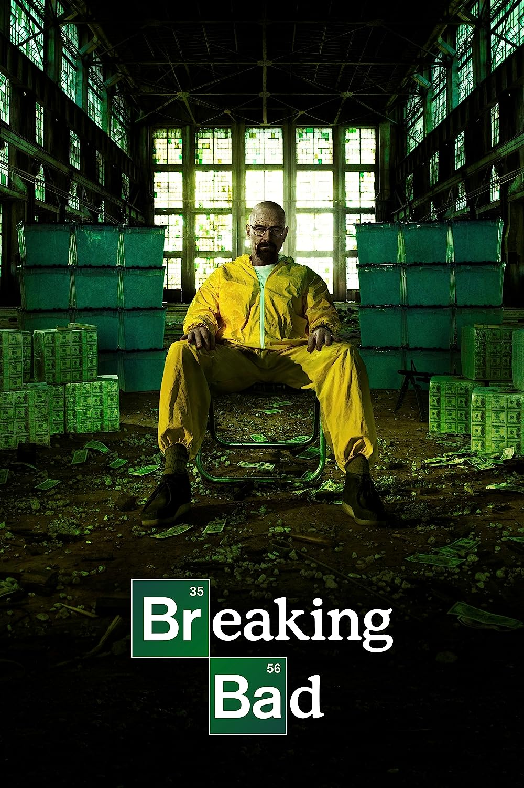

Breaking Bad is a drama series that takes place in Albuquerque, New Mexico, between 2008 and 2010. It centers on Walter White, a struggling and frustrated high school chemistry teacher who becomes a vicious boss in the neighborhood methamphetamine drug trade after learning he has incurable lung cancer.
Masashi Kishimoto is the author and illustrator of the Japanese manga series Naruto. It tells the tale of young ninja Naruto Uzumaki, who aspires to be recognized by his peers and the Hokage, the head of his village.
A mission to rescue the kidnapped son of an Indian drug lord in Dhaka, Bangladesh, is taken on by an Australian black ops mercenary in the movie, but things go wrong when he is betrayed.
PREVIOUS PAGE